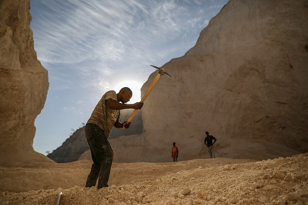

Трудовые мигранты из стран СНГ массово покидают Россию.
Кадровые агентства в России фиксируют увеличение спроса на сотрудников из стран дальнего зарубежья — Индии, Пакистана и даже Северной Кореи. Большинство из них не знают русского языка, а процесс их официального оформления на работу затягивается. Однако на фоне оттока рабочих из стран СНГ работодатели готовы ждать.
00:01, 20 февраля 2024

В мире идет борьба за песок.
Почему важнейший для строительства ресурс скоро станет большой редкостью? Нелегальная торговля и стремительное наращивание использования речного песка могут привести к дефициту важнейшего для строительства ресурса уже к 2050 году, предупреждают в ООН. Если в мире не ограничить добычу песка, под угрозой разрушения окажутся целые экосистемы, а расчистка прибрежных зон приведет к усилению засух.
00:02, 15 февраля 2024
«Шут, гений, провокатор и хам»
Илона Маска считают любимцем миллионов. Почему инвесторы разочаровались в нем? Основателя компаний SpaceX и Tesla и владельца сети Х (ранее Twitter) назвали переоцененным топ-менеджером. Инвесторы считают немыслимым для бизнесмена управлять таким количеством проектов. Пользователи считают успехи и популярность предпринимателя заслугой команды.
00:01, 11 февраля 2024